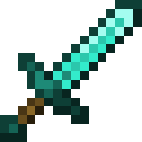
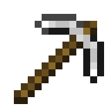
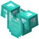
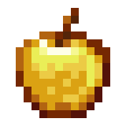
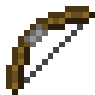
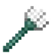
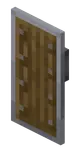
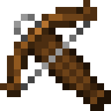
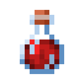
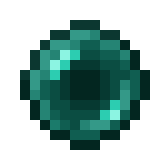

Espada de diamante
Arma
Arma cuerpo a cuerpo con gran daño, la favorita para combatir zombis y esqueletos.
2 diamantes + 1 palo
Durabilidad: 1561 usos
Ver másMundo Minecraft
Guía de bloques y supervivencia
Doce objetos que todo jugador acaba conociendo. Los datos corresponden a Java Edition y pueden cambiar en otras versiones.

Arma
Arma cuerpo a cuerpo con gran daño, la favorita para combatir zombis y esqueletos.
2 diamantes + 1 palo
Durabilidad: 1561 usos
Ver más
Herramienta
Extrae mineral de diamante, oro y redstone. Imprescindible para minar bajo tierra.
3 lingotes de hierro + 2 palos
Durabilidad: 250 usos
Ver más
Armadura
La pieza que más protege del conjunto frente a golpes y flechas.
8 diamantes
Durabilidad: 528 usos
Ver más
Comida
Recupera hambre y otorga absorción y regeneración durante un tiempo.
8 lingotes de oro + 1 manzana
Restaura 4 puntos de hambre
Ver más
Arma
Arma de rango que dispara flechas. Mantener el botón más tiempo aumenta el alcance.
3 palos + 3 hilos
Durabilidad: 385 usos
Ver más
Arma
Puede lanzarse o usarse cuerpo a cuerpo. Se consigue al derrotar a los ahogados.
No se fabrica: lo sueltan los ahogados
Durabilidad: 250 usos
Ver más
Armadura
Bloquea ataques de monstruos y flechas si se levanta a tiempo.
6 tablones + 1 lingote de hierro
Durabilidad: 336 usos
Ver másHerramienta
Alas que permiten planear largas distancias. Están en las naves del End.
No se fabrica: se halla en naves del End
Durabilidad: 432 usos
Ver másArmadura
Sostenido en la mano, salva al jugador de la muerte una vez.
No se fabrica: lo suelta el evocador
Un solo uso
Ver más
Arma
Dispara con más fuerza que el arco, pero se recarga antes de cada disparo.
3 palos + 2 hilos + 1 hierro + 1 gancho
Durabilidad: 465 usos
Ver más
Comida
Recupera vida al instante. Se prepara en un soporte para pociones.
Se elabora en el soporte para pociones
Recupera 2 corazones
Ver más
Herramienta
Teletransporta al jugador al punto donde cae, aunque causa daño por caída.
No se fabrica: la sueltan los Endermen
Daño al llegar: 2,5 corazones
Ver más